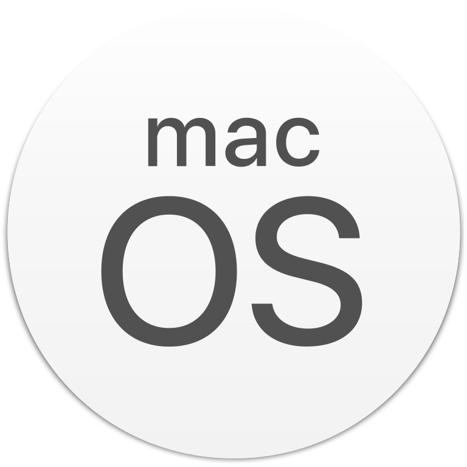
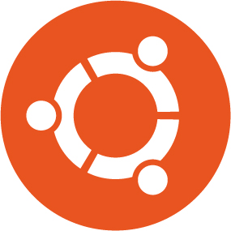

MacOS è un sistema operatvo che funziona solo su computer Mac.
MacOS è il mio sistema operativo preferito perchè è molto intuitivo ed essendo limitato ad un solo tipo di computer è sviluppato molto bene ed è molto stabile. Infatti molto raramente si incontrano degli errori.
MacOS integra un terminale da cui è possibile svolgere operazioni più complesse ed aggiungere nuovi programmi che funzionano da riga di comando.
Secondo me è fondamentale installare i Command Line Tools, cioè delle utility che comprendono SSH, git, nano ecc.
È fantastica l'integrazione di MacOS con altri dispositivi Apple, come iPhone e iPad e la funzione AirDrop.
Inoltre questo SO integra programmi simili ad Office, quindi non è necessario acquistare una licenza a parte.
Esistono pochi virus per MacOS e questo lo rende un sistema operativo molto sicuro.
Ubuntu

Ubuntu è un sistema operatvo basato su kernel Linux. Ubuntu si può installare su qualsiasi computer (eccetto i Mac) eliminando Windows o installandolo in dual boot, cioè mantenendo sia Windows sia Ubuntu.
Essendo basato su Linux ha un terminale, un gestore di pacchetti (apt) e tutto quello che si trova sulle distribuzioni Linux.
Pur essendo basato su Linux è molto intuitivo e semplice da usare, ma anche molto potente, infatti per installare nuovi programmi ed aggiornare il sistema operativo non è necessario usare il terminale, ma si può fare tramite interfaccia grafica.
Ubuntu comprende numerosi programmi tra cui un browser (Firefox), una suite di programmi simili a Office (LibreOffice) e un client mail (Thunderbird).
In caso di errori è disponibile una guida corposa e forum sempre attivi.
Ubuntu è scaricabile gratuitamente da questo link.
 Programmi
Programmi